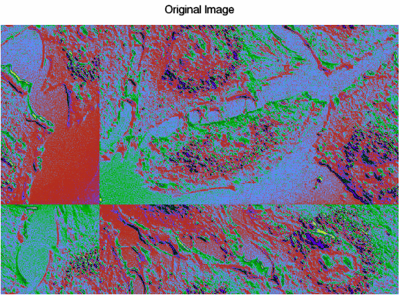
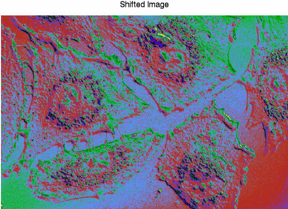

Sometimes image files are saved with array elements offset. You can correct for the offsets using the SHIFT function as long as you know the amounts of the vertical and horizontal offsets.
Use the SHIFT function to move elements of a vector or array along any dimension. Since all shifts are circular, elements that are shifted off one end wrap around, appearing at the opposite end of the vector or array.
The following example shows an image where the x-axis of the original image is offset by a quarter of the image width, and the y-axis is offset by a third of the height. In the code, you can see how the SHIFT function works to correct the image display.
|  |  |
; Select the image file.
file = FILEPATH('shifted_endocell.png', $
SUBDIRECTORY = ['examples','data'])
; Use the READ_PNG function to read it into memory.
cell = READ_PNG(file)
; Get the size of the image returned by the SIZE function.
imageSize = SIZE(cell, /DIMENSIONS)
; Display the image using the IMAGE function.
im = IMAGE(cell, TITLE = 'Original Image', RGB_TABLE=29)
; Use the SHIFT function to correct the original image.
cell2 = SHIFT(cell, -(imageSize[0]/4), -(imageSize[1]/3))
; Display the corrected image in a second window.
im2 = IMAGE(cell2, TITLE = 'Shifted Image', RGB_TABLE=29)
Note: In the example, the SHIFT function moves the elements along the x-axis to the left, using a quarter of the array width as the x-dimension values. It also moves the y-axis elements, using one third of the array height as the number of elements to be shifted. By entering negative values for the amount the image dimensions are to be shifted, the array elements move toward the x and y axes.